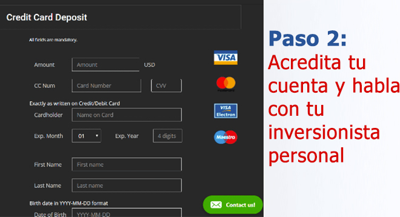

INFORME ESPECIAL: El último método de inversión de Leonardo Farkas ha dejado a los expertos sin palabras y a los grandes bancos aterrorizados
Ya los latinoamericanos están amasando millones de dólares desde sus casas gracias a esta "laguna", pero ¿es legal?
(24 Horas) Leonardo Farkas revela nuevo secreto de inversión que ha hecho que cientos de personas en América Latina se vuelvan muy ricas
- El empresario chileno Leonardo Farkas se ha ganado a pulso la fama de que va directo al grano y no le importa ser sincero al momento de hablar sobre cómo hace su dinero.
La semana pasada estuvo en television Nacional y anunció una nueva "laguna" que según él puede hacer que cualquier persona sea millonaria en 3-4 meses. Farkas animó a todas las personas en América Latina a que aprovechen esta increíble oportunidad antes de que los grandes bancos acaben con ella para siempre.
Y, por supuesto, minutos después de que se acabara la entrevista, Corpbanca llamó para solicitar que no la publicaran... pero ya era demasiado tarde.
Esto fue lo que pasó exactamente:
La presentadora de 24 Horas Central, Carolina Escobar, invitó a Farkas al programa para que compartiera sus consejos sobre cómo generar riquezas y así fue como él reveló el gran secreto.
"Lo que me ha hecho exitoso ha sido que aprovecho rápidamente las nuevas oportunidades, sin dudarlo. Y en este momento mi método #1 para hacer dinero es un nuevo programa que hace transacciones automáticas con criptomonedas llamado Bitcoin Up™. En toda mi vida no había visto una oportunidad tan increíble como esta, que te permite generar una pequeña fortuna en poco tiempo. Le digo a todo el mundo que revise esto antes de que los bancos lo manden a cerrar."
Carolina Escobar no lo podía creer cuando Leonardo Farkas sacó su teléfono y mostró a los televidentes cuánto dinero hace con este nuevo programa que ahora está haciendo suspirar a todo el mundo en Latinoamérica.

El tiempo del programa se agotó antes de que pudiera explicarlo todo con lujo de detalles, así que conseguimos una entrevista exclusiva con el mismísimo Farkas para aprender más sobre esta oportunidad que está generando controversias.
24 Horas EN EXCLUSIVA CON Leonardo Farkas
"Seguramente han oído hablar sobre esta nueva plataforma de inversiones con criptomonedas llamada Bitcoin Up™ que está ayudando a la gente común y corriente de América Latina, Asia y América del Norte a construir fortunas de la noche a la mañana. Es posible que lo vean con escepticismo porque suena demasiado bueno para verdad".
Leonardo prosigue:
"Yo lo entiendo porque me pasó exactamente lo mismo cuando me lo contó un amigo en el que confío mucho. Sin embargo, después de ver con mis propios ojos cuánto dinero estaba haciendo, tenía que probarlo yo mismo.
Me alegra haberlo intentado, porque gracias a eso he hecho la mayor cantidad de dinero en mi vida, y de la forma más sencilla. Les hablo de decenas de miles de pesos al día, en automático. Es literalmente la manera más rápida de hacer que te llueva dinero ahora mismo. Y no va a durar mucho después de que muchas personas lo descubran. O de que los bancos lo destruyan siempre".
¿QUÉ ES EXACTAMENTE Bitcoin Up™ Y CÓMO FUNCIONA?
La idea detrás de Bitcoin Up™ es bastante sencilla: Permitirle a la persona promedio unirse al boom de las criptomonedas, que sigue siendo la inversión más rentable del siglo XXI, a pesar de lo que piensa la mayoría de la gente.
Aunque el precio del Bitcoin ha caído desde su máximo histórico, 20.000$ por Bitcoin, los inversionistas todavía se están enriqueciendo. ¿Por qué? Pues, porque hay miles de criptomonedas aparte del Bitcoin con las que se hacen transacciones que generan enormes ganancias a diario.
Algunas de estas criptomonedas son Ripple, Ethereum, Monero y Zcash. Todavía generan más de 10.000% de ganancias para la gente común y corriente de América Latina.
Bitcoin Up™ te permite sacar provecho de todas estas criptomonedas, incluso en un mercado bajista. Utiliza inteligencia artificial (AI) para gestionar ventas y ventas cortas por ti y que puedas hacer dinero a toda hora, incluso mientras duermes.
Bitcoin Up™ está respaldado por algunas de las mentes más brillantes de la historia en el área de la tecnología. Entre ellas tenemos a Richard Branson, Elon Musk y Bill Gates.

Bill Gates y Richard Branson conversaron sobre Bitcoin Up™ en CES 2019.
Estos genios de la tecnología han construido empresas multimillonarias para resolver problemas complejos en áreas tales como pagos en línea, computación y transporte. Ahora luchan contra la desigualdad económica, que representa un problema global, al permitir que cualquier persona, sin importar que tan pobre o rica sea, haga suficiente dinero para disfrutar de una vida feliz y satisfactoria.
EL LUCRATIVO SECRETO PARA GENERAR DINERO QUE LOS GRANDES BANCOS NO QUIEREN QUE SEPAS
Leonardo continúa,
"Nuestra economía está pasando por momentos difíciles y esta es la solución que la gente ha estado esperando. Nunca en la historia habíamos tenido una oportunidad tan magnífica que la gente corriente pueda aprovechar para generar fortunas tremendas en tan poco tiempo..
Algunas personas tienen dudas sobre si probarlo o no porque es algo muy diferente. ¡Y por eso es que los grandes bancos están tratando de ocultarlo! Los grandes bancos están todo el tiempo generando propaganda y diciendo que las criptomonedas y las plataformas como Bitcoin Up™ son un fraude. ¿Por qué? Temen que sus beneficios corporativos disminuyan una vez que sus clientes aprendan a generar riquezas masivas por su cuenta.
La verdad es que las criptomonedas son la revolución de nuestra era y cualquier persona que no se una a esta oportunidad se pierde de mucho. Ya he recibido llamadas agresivas y amenazantes por parte de grandes corporaciones financieras porque estoy poniendo esta tecnología a la vista de todos. Pero a mí eso no me importa. La gente en América Latina ya está empezando a conocer la verdad y solo es cuestión de tiempo que cada vez más personas sepan sobre esto.
Lo comparto porque ya he recibido cientos de correos de personas que me agradecen por compartir este secreto. Mi favorito es el de un joven que gracias al dinero que hizo con Bitcoin Up™ le regaló a su hermano menor el auto de sus sueños: un Ferrari 488 Pista. Esta plataforma de verdad está haciendo que la vida de todas las personas del mundo sea un poco mejor".

Desde que mi hermano menor era un niño quiso un Ferrari 488 Pista por su clásico y hermoso color rojo y su poderoso motor. Bien, últimamente he estado haciendo enormes cantidades de dinero gracias a una nueva plataforma para hacer transacciones con criptomonedas (escríbanme si quieren más detalles), ¡y lo sorprendí con el AUTO DE SUS SUEÑOS! ¡Su reacción NO TIENE PRECIO! ¡Te amo, hermanito!
¿Bitcoin Up™ DE VERDAD FUNCIONA? LO PROBAMOS NOSOTROS MISMOS
Nuestros editores en jefe no nos dejaron publicar la entrevista con Leonardo Farkas hasta verificar que Bitcoin Up™ es un método legítimo para hacer dinero desde casa. La gerencia no quería que publicáramos ningún tipo de información que pudiera causar que los ciudadanos de América Latina perdieran el dinero que se ganan con esfuerzo.
Así que nuestro equipo editorial probó Bitcoin Up™ para asegurarse de que de verdad funciona como dice Farkas. Uno de nuestros editores en línea, Juan Gómez, se ofreció como voluntario y arriesgó su propio dinero para probar Bitcoin Up™.
Juan es un hombre de 53 años, padre de dos hijas. Su esposa se enfermó el año pasado y por eso perdió su trabajo. Juan admitió que tenía problemas financieros y que esta oportunidad de inversión podría ser la solución.

Su familia estaba luchando para que el dinero les alcanzara y tenían sus esperanzas puestas en que Bitcoin Up™ les ayudaría a aliviar la presión, así que Juan decidió probar el sistema y hablar sobre los resultados que obtuvo.
Juan informa que:
"Al principio, cuando escuché la entrevista de Leonardo Farkas, pensé que era un chiste. Hacer dinero desde casa no es más que un sueño. Decidí que igual lo iba a probar, dadas mis circunstancias económicas. Además, todo sea por el periodismo de calidad.
Vi un video introductorio acerca de la plataforma y después me registré. Me pareció que el video era demasiado prometedor, pero decidí dejar de lado mi escepticismo. Un par de horas después recibí una llamada de mi inversionista personal. Respondió todas mis preguntas y dudas, y me aseguró que haría dinero. Punto.
Mi inversionista personal incluso me prometió que si perdía un solo centavo, me reembolsaría mis 182,000 pesos de inmediato. Así de seguro estaba él de que esto me iba a cambiar la vida. Les digo, eso sí es un servicio al cliente, es mucho mejor que cualquier otro que haya visto en mi vida y no me sorprende que los bancos estén preocupados.
Una vez recibí acceso a la plataforma, deposité mi inversión inicial de 182,000 pesos chilenos. La plataforma hace transacciones en euros (€) y dólares ($) pero puedes retirar los fondos en la moneda que prefieras.
El sistema de Bitcoin Up™ es una plataforma que hace transacciones automáticas con criptomonedas. El software utiliza algoritmos avanzados de inteligencia artificial y aprendizaje automático para predecir exactamente cuándo las criptomonedas subirán o bajarán. Luego compra y vende por ti, de forma automática y a toda hora. Ya la tecnología ha mejorado nuestras vidas de todas las formas imaginables, ¿por qué no usarla también para hacer más dinero?".
LOS RESULTADOS REALES DE JUAN CON EL SISTEMA
"Después de una hora de haber depositado los 182,000 pesos, el software empezó a hacer transacciones por mí. Para ser honesto, me ponía nervioso perder todo mi dinero. Y efectivamente, ¡la primera transacción resultó en una pérdida de 25€!
Sentí un nudo en la garganta. Pensé que me habían estafado. Ya me estaba preparando para llamar a mi inversionista personal y pedirle que me regresara mi dinero, pero luego recordé algo que me había dicho antes: El algoritmo hace predicciones correctas el 80-89% del tiempo. No vas a ganar TODAS las transacciones, pero vas a ganar suficiente y al final te generará ganancias.
Así que dejé que el software siguiera haciendo transacciones por mí mientras lo observaba sin perderme un segundo. ¡La siguiente transacción fue positiva! Solo me dejó 370 pesos, pero algo es algo. Luego de eso hice 993 pesos. Después de eso 428 pesos, lo que para ese momento era una ganancia total de 1304 pesos. ¡Y todo eso pasó en menos de 5 minutos!
Luego de eso empecé a acumular dinero como si nada, no podía creer lo que veían mis ojos.
Cada vez que refrescaba la pantalla, mis ganancias crecían y crecían. Me sentía como si estuviera alucinando con drogas, todo era demasiado emocionante.
Ahora sé por qué Leonardo Farkas siempre está de buen humor. Y por qué los grandes bancos no quieren que la gente sepa nada sobre esta laguna. Al final del día había hecho más de 14.682 pesos en ganancias, ¡nada mal para haber empezado con 182,000 pesos! Estaba tan emocionado que apenas pude dormir.
El día siguiente era martes y tenía que ir a trabajar otra vez. Si les soy sincero (y no le digan esto a mi jefe), fue difícil concentrarme en el trabajo mientras pensaba que el software de Bitcoin Up™ me estaba generando dinero.
Me escapé al baño varias veces para revisar cómo iban mis ganancias, que seguían creciendo (con pérdidas pequeñas aquí y allá). En la noche, después de que mis hijos se quedaron dormidos, mi cuenta tenía 26.272,23 pesos. ¡Eso es más de lo que gano en una SEMANA de trabajo!
Cuando se terminó la semana ya había hecho 104.165,87. Retiré exactamente 4.500€ (98.614 pesos) y reinvertí el resto. En dos días recibí mi cheque en el correo por 4.500€ (98614 pesos) exactos. ¡No podía creer que estaba despierto!"

Juan recibió un cheque por 4.500€ (98.614 pesos) por sus primeras dos semanas en la plataforma Bitcoin Up™.
Juan dice,
Ahora hago regularmente unos 13.630-29.210 pesos al día gracias a Bitcoin Up™. El dinero se deposita en mi cuenta del banco cada par de días. Con solo unos cuantos clics recibo mi dinero en las siguientes 24-48 horas. Cada vez que veo la transferencia en mi cuenta, tengo que pellizcarme para asegurarme de que no estoy soñando.
Por suerte, me ENCANTA mi trabajo aquí porque puedo contar historias importantes (como esta) a las personas. De lo contrario, ya habría renunciado. Sin embargo, ya planeé unas vacaciones con mi familia a Bali, Indonesia, para celebrar que pagamos todas las deudas y que al fin nuestras finanzas están en orden.
Nada de esto sería posible sin la generosidad del Sr. Leonardo Farkas, quien compartió este secreto en la TV en vivo. Y me alegra haberme atrevido a probar Bitcoin Up™ yo mismo. Mi esposa está más feliz que nunca y la despensa de juguetes de mis hijos está hasta el tope.
Mis compañeros de trabajo se lamentan porque no empezaron hace dos semanas como yo, pero en poco tiempo la oficina entera (incluido mi jefe) ya se había registrado. Ahora dicen que soy un 'héroe' por haberlo intentado".
CÓMO EMPEZAR EN Bitcoin Up™ (ESPACIOS LIMITADOS DISPONIBLES)
Para empezar solo necesitas tu computadora, teléfono inteligente o tablet con acceso a Internet. No necesitas habilidades específicas, solo debes saber cómo usar una computadora y navegar por Internet. No necesitas experiencia en tecnología o criptomonedas porque tanto el software como tu inversionista personal te garantizan que generarás ganancias.
Otra de las ventajas de este programa es que puedes empezar cuando quieras. Puedes diseñar tu propio horario; bien sea 5 horas a la semana o 50 horas a la semana. Solo debes iniciar el software de transacciones automáticas y pausarlo cuando desees (aunque no sé por qué alguien querría pausarlo).
Para ahorrarles tiempo a nuestros lectores y hacer un chequeo doble de la funcionalidad, Juan creó amablemente una guía para iniciarse en el sistema.
ESTA ES LA GUÍA PASO A PASO:
Lo primero que ves es un video que presume del poder de Bitcoin Up™. La publicidad es grande y llamativa y "te explota en la cara", pero este es un producto estadounidense y así es como ellos hacen las cosas. Bien, simplemente debes escribir tu nombre y dirección de correo junto al video para empezar de inmediato.
(Consejo: Incluso si decides no invertir nada, te recomiendo que te registres ya porque es gratis y los espacios para los residentes de América Latina podrían terminarse en cualquier momento).
Luego de eso te piden que ingreses fondos a tu cuenta. Mientras veía la página de depósitos, mi teléfono sonó. Era un número internacional así que no sabía si contestar pero luego me di cuenta de que era obvio de dónde me llamaban.
Tal y como me esperaba, era mi propio administrador de cuenta al teléfono. El servicio que ofrece es excelente. Me guio en todo el proceso de acreditación. Aceptan todas las tarjetas de crédito reconocidas tales como Visa, MasterCard y American Express. Proseguí y deposité la cantidad mínima: 250$ o 213,000 pesos.
Una vez ingresados los fondos, fui a la sección "Operador Automático" del software, establecí el monto de operaciones recomendado (1095 pesos) y lo habilité. El software empezó a hacer operaciones a altas velocidades y al principio me preocupé, pero dejé que hiciera lo suyo.
"Todo el mundo quiere ser rico, pero nadie sabe cómo lograrlo. Bien, esta es una oportunidad única en la vida para construir una fortuna que te permita vivir la vida que de verdad deseas. NO va a estar disponible para siempre, así que no te lo pierdas." - Leonardo Farkas
ACTUALIZACIÓN
Acabamos de recibir la noticia de que ya casi todos los puestos para los residentes de América Latina están ocupados. Bitcoin Up™ puede aceptar solo una cantidad limitada de usuarios para así mantener los altos niveles de ganancias por usuario. En este momento aún quedan 37 espacios disponibles, así que date prisa y regístrate para que asegures tu lugar.